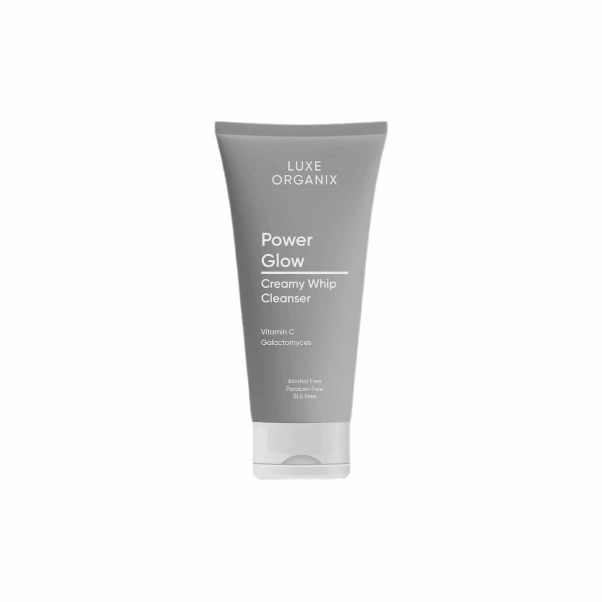

- LOGO
- Luxe Organix


|

|
Cleanser
Luxe Organix Power Glow Creamy Whip Cleanser cleanses face without the stripping feeling. How To UseSqueeze a pea sized amount onto hands, gently massage into damp face in circular motions, avoiding the eye area. Rinse thoroughly with water. Ingredients Water, Glycerin, Palmitic Acid, Stearic Acid, Myristic Acid, Potassium Hydroxide, Lauric Acid, Cocamidopropyl Betaine, |
|---|